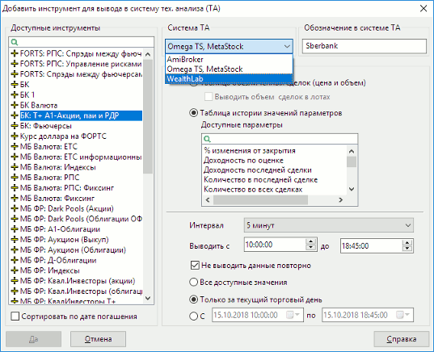
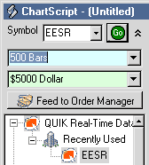
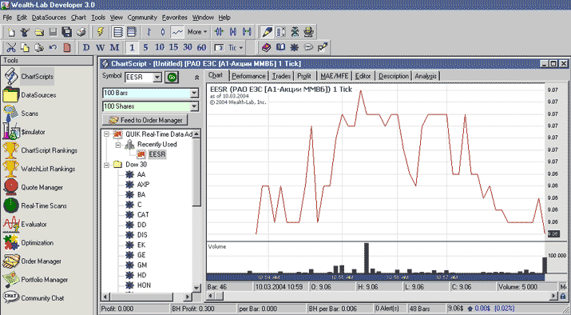
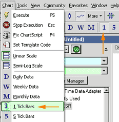

Настройка программы Wealth-Lab Developer
Подготовка к работе
- Установите программу Wealth-Lab Developer.
- Скачайте дистрибутив для установки программы экспорта из QUIK в Wealth-Lab
Developer. Его можно взять по адресу: http://arqatech.com/upload/iblock/644/quik2wld_rtadapter.zip.
Создание источника данных в QUIK
- В Рабочем месте QUIK откройте окно настройки экспорта с помощью пункта меню
Сервисы / Экспорт/импорт данных / Экспорт в системы тех. анализа….

- Создайте список экспортируемых инструментов и их параметров. Для
добавления инструмента в список нажмите кнопку «Добавить». Откроется диалог выбора
параметров для экспорта.
- В списке «Доступные инструменты» выберите
инструмент, например, «Сбербанк». По умолчанию список упорядочен в алфавитном порядке, для
сортировки инструментов с фиксированным сроком обращения предназначена опция «Сортировать по
дате погашения».
- В поле «Система ТА» выберите значение «WealthLab».
- В поле «Обозначение в системе ТА» введите идентификатор инструмента в
программе Wealth-Lab Developer.
- Выберите источник данных для экспорта. Из
Таблицы обезличенных сделок возможен экспорт цены и объема по
каждой сделке. При установленном флажке «Выводить объем сделок в лотах» данные
о количестве инструментов в последней сделке будут соответствовать числу лотов
в сделке, при снятом флажке – количеству единиц инструментов. Из Таблицы истории значений параметров возможен экспорт
большего числа параметров, например «Лучшая цена спроса» или «Лучшая цена
предложения».
- В поле «Интервал» выберите интервал вывода данных в программу Wealth-Lab
Developer.
- Выберите время начала и конца торговой сессии.
- Установленный флажок «Не выводить данные повторно» означает, что
при разрыве связи с сервером и последующем восстановлении QUIK не передает
заново ранее экспортированные данные. Если флажок снят, то при каждом
восстановлении связи с сервером QUIK экспортирует все данные с начала торговой сессии.
- Установите параметры, определяющие количество экспортируемых данных
(применительно к выбранному инструменту).
- Нажатием кнопки «Да» окно выбора параметров инструмента закрывается,
и новый инструмент отображается в списке «Экспортируемые инструменты».
Настройка импорта данных в Wealth-Lab Developer
- Запустите Wealth-Lab Developer и выберите пункт меню
DataSources / Enable Live Feed / QUIK Real-Time Data
Adapter. При успешном запуске импорта в строке состояния программы
появится надпись «QUIK RTAdapter».
- Для создания графика выберите пункт File / New
ChartScript либо нажмите соответствующую кнопку на панели
инструментов.
- В появившемся окне нужно ввести в поле «Symbol» название тикера,
идентичное указанному при настройке источника данных в системе QUIK. В нашем
случае туда нужно ввести значение «SBER» и нажать «Enter».

- После этого в папке «QUIK Real-Time Data Adapter» появится тикер SBER. Его
нужно выбрать.
- Так как в рассматриваемом примере данные будут выводиться в тиках,
назначьте для тикера «SBER» отображение в тиках.
- В пункте меню «Chart» можно выбрать тип отображения графика (бары, свечи,
линии). Для примера построения тикового графика выберите линии (Chart/Line).
- После этого начните экспорт из QUIK нажатием кнопки «Начать вывод» в окне
«Экспорт данных для технического анализа».
- Для построения графика нажмите в Wealth-Lab Developer кнопку «Go», которая
расположена на форме «ChartScript» возле поля «Symbol».
На экране отобразится график наподобие изображенного на рисунке.

- Настройка количества тиков, отображаемых на одном отрезке графика,
осуществляется из пункта меню Chart или нажатием кнопок на панели
инструментов. Для отображения каждой сделки отдельным отрезком графика
выберите значение «1 Tick Bars».
